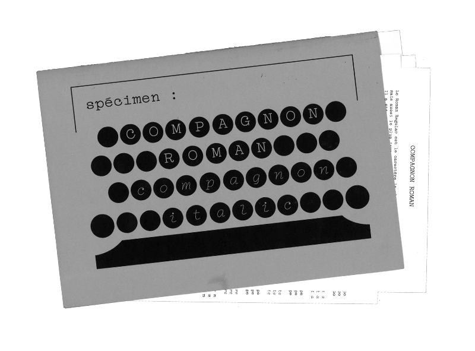
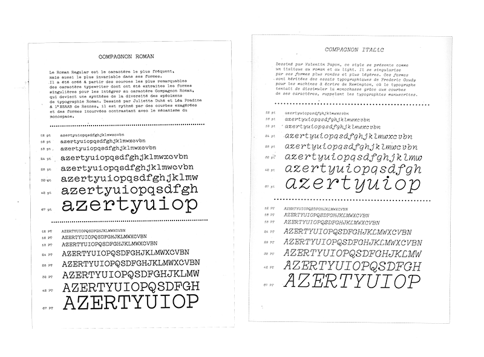
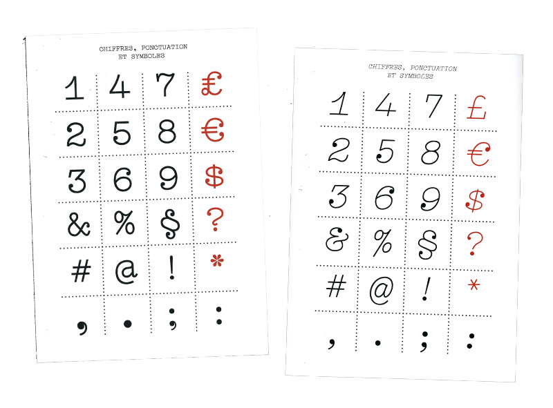
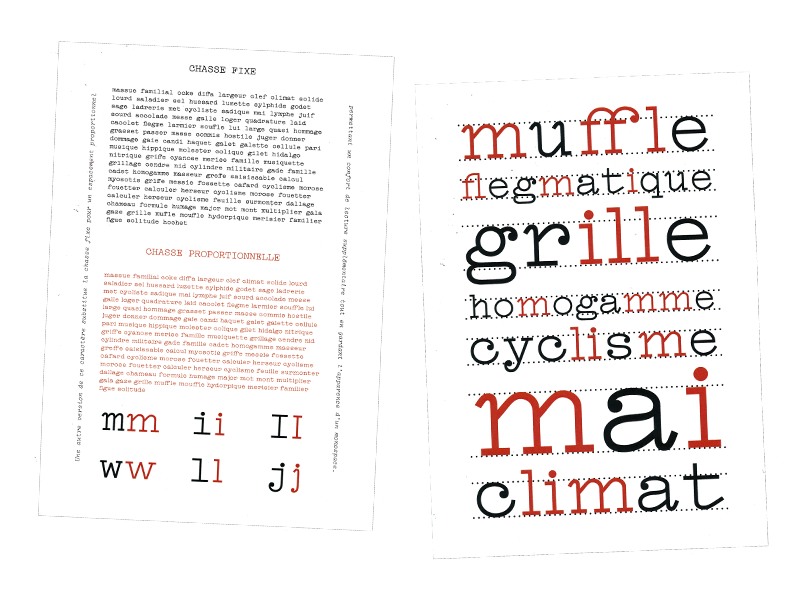
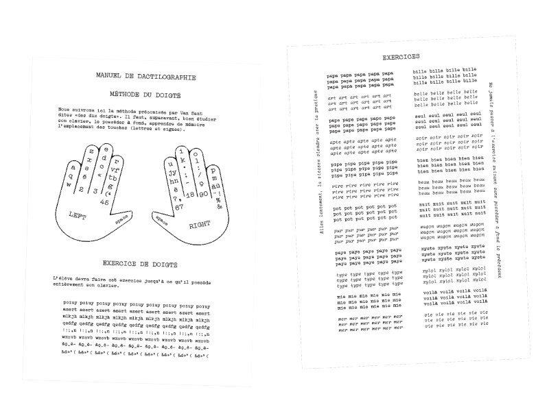

Specimen; Compagnon Roman/Italic
Presentation object of the Compagnon font in its roman and italic versions. Compagnon is a free access typograhy drew in 2017 by students of ESAAB (Rennes, France).




